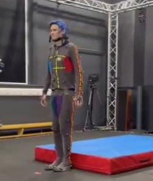
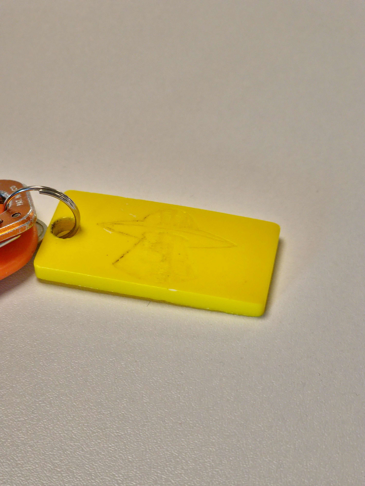

Motion capture hardware, software, and stage facilities
Motion capture, or mo-cap, is the process of recording the movement of objects or people. It is used in military applications, entertainment, sports, medical, and computer vision validation. It is most often used in filmmaking and video game development, where it involves recording the actions of human actors and using that information to animate digital character models in 2D or 3D computer animation. This was not used in this project as a range of human motion was not required.
Laser-cutting hardware and workshop facilities
Laser cutting is a technology that uses a laser to cut or drill materials. The process is widely used in various industries, including metalworking, woodworking, plastics, and textiles. Laser cutting offers several advantages, such as precision, speed, minimal material wastage, and the ability to create intricate designs. It’s commonly used for making prototypes, signage, jewellery, and architectural models. While laser cutting is versatile, it may not be suitable for highly reflective materials (like copper) or materials that release toxic fumes (like PVC). Proper safety precautions are essential. This process was not utilised in this project, as laser cutting produces flat components which would add an extra step in the production of the model. These pieces would need to be assembled to meet the preferred scale of the dragon.

Resin production and postproduction, and composite workshop facilities
Resin casting is a versatile manufacturing process that involves pouring liquid resin into a mould to create a solid object once the resin cures. It's used in art, jewellery making, and prototyping, due to its ability to replicate intricate details and produce high-quality, durable parts. The process begins with the creation of a mould, typically made from silicone or other flexible materials, which is then filled with liquid resin mixed with a catalyst to initiate curing. However, it requires careful attention to detail in mould-making and resin mixing to achieve desired results. After some experimentation in the resin lab, it was decided that resin would not be used in this project. The reasoning behind this was that a mould would have been needed to cast the model, and it was easier to use 3D scanning to create a digital model and edit it to suit the project's needs.
Haptic input hardware and associated 3D sculpting software
Haptic feedback refers to the tactile sensations experienced through touch in response to interactions with virtual reality (VR) environments. In the context of 3D modelling, haptic technology provides the tactile feedback that is often lacking in current digital representation methods. Architects and designers can explore texture, material selections, and intricate architectural details using haptic interfaces, giving them a substantial edge in design quality. For this project, haptic input hardware was not used. This was due to the limited availability of the hardware, in comparison to the more available 3D modelling software. This hardware would have provided greater control over the fine details of the model.
.png)